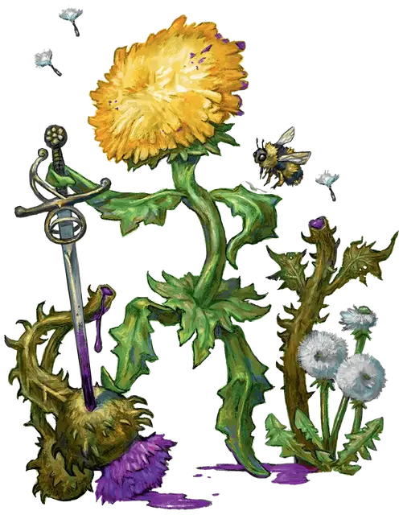

Одуванчик Амидор
Amidor the Dandelion
Маленькое Растение, нейтрально-доброе, именной НИП

Класс Доспеха 12
Хиты 28 (8к6)
Скорость 30 футов
| мод | спас | ||
|---|---|---|---|
| СИЛ | 6 | −2 | +0 |
| ЛОВ | 15 | +2 | +4 |
| ТЕЛ | 10 | +0 | +2 |
| мод | спас | ||
|---|---|---|---|
| ИНТ | 13 | +1 | +1 |
| МДР | 12 | +1 | +3 |
| ХАР | 17 | +3 | +3 |
Навыки Восприятие +3, Скрытность +4, Убеждение +5
Чувства пассивное Восприятие 13
Языки Общий, Сильван
Опасность 1/2 (100 опыта)
Бонус мастерства +2
Особенности
Общающийся со зверями и растениями. Амидор может общаться со Зверями и Растениями так, как если бы у него был с ними общий язык.
Действия
Рапира. . Рукопашная атака оружием: +4 к попаданию, досягаемость 5 футов, одна цель. Попадание: 6 (1к8 + 2) колющего урона.
Праща с семенем. Дальнобойная атака оружием: +4 к попаданию, дистанция 30/120 футов, одна цель. Попадание: 4 (1к4 + 2) дробящего урона.
Реакции
Парирование. Амидор добавляет 2 к КД против одной рукопашной атаки, которая должна попасть по нему. Для этого Амидор должен видеть атакующего, и должен использовать рукопашное оружие.